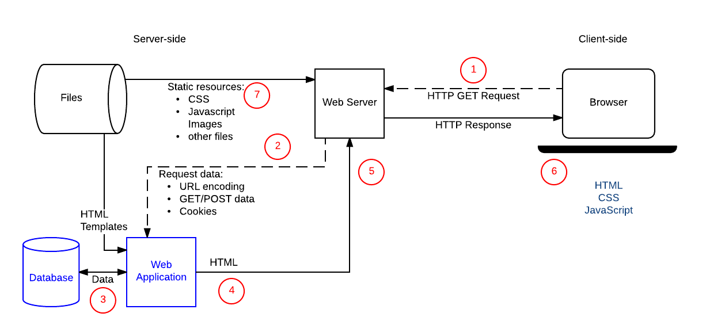

Web
Client-Server Applications
## <i class="fas fa-tasks"></i> Overview of Today's Class - Quiz (OO Javascript and more) - Client Server Applications
Quiz
Object Oriented Javascript and more
## <i class="fas fa-question-circle"></i> Question 1 Quelle est la valeur imprimée par le programme suivant? ```js var obj = { "1": "one" } console.log(obj[1]); ``` Notes: <div class="spoiler"> L'output est `"one"`. En effet, l'objet est créé avec une propriété nommée `1` qui est de type String. Pour rappel, les clefs des propriétés d'un objet en Javascript sont de type string ou symbol. Lorsqu'on tente d'accédé à la propriété `1` de type `Number`, Javascript fait une conversion implicite de type pour comparer ce `1` au nom des propriétés de l'objet. L'objet a effectivement une propriété `"1"`, donc l'output est `"one"`. </div>
## <i class="fas fa-question-circle"></i> Question 2 Lequel ou lesquels des types suivants ne sont pas un type primitif (Oui, les majuscules sont justes !) - Symbol - Array - BigInt - Int - Undefined - String Notes: <div class="spoiler"> `Int` n'est pas un type primitif : Javascript représente tous ses nombres, avec ou sans virgule, avec le type `Number`. Il n'existe pas de type `Int`. `Array` n'est pas un type primitif : c'est une fonction qui créer un objet avec des propriétés spéciales, utilisé pour représenter des tableaux de données. C'est donc un objet. [Types primitifs](https://developer.mozilla.org/en-US/docs/Web/JavaScript/Data_structures#primitive_values) [Spécification des types en JS](https://262.ecma-international.org/6.0/index.html#sec-ecmascript-data-types-and-values) </div>
## <i class="fas fa-question-circle"></i> Question 3 Etant donnée une classe `Apple` qui hérite d'une classe `Fruit`, et ayant chacune une instance `apple` et `fruit`: ```js class Fruit {} class Apple extends Fruit {} let fruit = new Fruit(); let apple = new Apple(); ``` Quelles affirmations sont correctes ? (N.B. par prototype on entend la propriété `__proto__`) 1. Le prototype de `apple` est `Apple` 2. Le prototype de `Fruit` n'a pas de prototype, seuls les objets ont des prototypes 3. Le prototype de `Apple.prototype` est `Fruit.prototype` 4. Le prototype de `apple` est le prototype de `Fruit` 5. Le prototype de `apple` est `Apple.prototype` 6. Le prototype du prototype de `fruit` est `Object.prototype` 7. Le prototype de `fruit` est `Fruit.prototype` 8. Aucune des autres réponses Notes: <div class="spoiler"> Les réponses 3, 5, 6 et 7 sont correctes. Ce qui s'apparente à une classe (`Apple` et `Fruit`) est ici une fonction qui a pour but d'être utilisée comme constructeur (avec le mot clé `new`). Ces "fonction constructeur" ont une propriété `prototype` qui devient le prototype des instances créés via elles. Cette propriété `prototype` est un objet comme un autre, et a elle même également un prototype (propriété `__proto__`). Le prototype d'`Apple.prototype` pointe sur `Fruit.prototype`. Les instances `apple` et `fruit` de `Apple` et `Fruit` resp. sont des objets comme les autres, et leur propriété prototype pointe sur la propriété `prototype` de la classe/constructeur qui les a construits. Le prototype de `apple` est donc `Apple.prototype`. Veillez à bien comprendre la différence *sémantique* entre les objets qui sont des instances, les objets qui sont des constructeurs/classes, et ceux qui sont des prototypes. </div>
## <i class="fas fa-question-circle"></i> Question 4a Qu'affiche le code suivant ? ```js function doTwice(f) { f() f() } let human = { age: 32, getOlder() { this.age++ } } doTwice(human.getOlder) console.log(human.age) ``` - 32 - 33 - 34 - Une erreur est lancée - Aucune des autres réponses Notes: <div class="spoiler"> 32 En effet, la fonction `getOlder` n'est pas appelée comme une méthode (c'est à dire avec la notation `.`). Similairement aux constructeurs, qui sont de simples fonctions s'ils ne sont pas appelés avec `new`, une méthode n'est qu'une fonction si elle n'est pas appelée avec sur un objet. Ici, la fonction `getOlder` est appelée comme une fonction, et donc `this` est le global `this`, et donc la variable `age` ne sera pas définie (`undefined`). JavaScript faisant des conversions parfois inattendues, `undefined++` donne `NaN`. Dans tous les cas, ce sera une variable `age` définie dans le global this qui sera incrémentée, et non pas celle de l'objet, d'où le résultat de 32. [MDN Operators this](https://developer.mozilla.org/en-US/docs/Web/JavaScript/Reference/Operators/this) </div>
# <i class="fas fa-question-circle"></i> Question 4b Qu'affiche le code suivant ? ```js function doTwice(f) { f.call(this); f.call(this); } let human = { age: 32, getOlder() { this.age++; } } doTwice.call(human, human.getOlder); console.log(human.age); ``` - 32 - 33 - 34 - Une erreur est lancée - Aucune des autres réponses Notes: <div class="spoiler"> L'output sera 34 car on lie le `this` de `doTwice` à `human`, que l'on passe ensuite à `f` (`human.getOlder`) via `f.call(this)`. Le `this` de `getOlder()` est donc `human`. </div>
# <i class="fas fa-question-circle"></i> Question 4c Qu'affiche le code suivant ? ```js class Human { constructor(age) { this.age = age; } getOlder() { this.age++; } } function doTwice(f) { f.call(this); f.call(this); } let person = new Human(32); doTwice.call(person, person.getOlder); console.log(person.age); ``` - 32 - 33 - 34 - Une erreur est lancée - Aucune des autres réponses Notes: <div class="spoiler"> L'output sera 34. Le fait de créer un object via un constructor ne change rien au problème de base. </div>
## <i class="fas fa-question-circle"></i> Question 5 Qu'affiche le code suivant ? ```js let person = { name: "John" }; let student = { studentId: 42 }; Object.assign(person, student); student.studentId = 43; console.log(person.studentId); ``` - 42 - 43 - undefined - Une erreur est lancée - Aucune des réponses ci-dessus Notes: <div class="spoiler"> L'output est `42`. En effet, `Object.assign` copie les propriétés de `student` dans `person`, mais ne crée pas de lien entre les deux objets. Donc lorsque la propriété `studentId` de `student` est modifiée, cela n'a aucun impact sur `person`. La méthode `Object.assign()` est utilisée afin de copier les valeurs de toutes les propriétés directes (non héritées) d'un objet qui sont énumérables sur un autre objet cible. Cette méthode renvoie l'objet cible. [Source](https://developer.mozilla.org/fr/docs/Web/JavaScript/Reference/Global_Objects/Object/assign) </div>
## <i class="fas fa-question-circle"></i> Question 6 Quelle est la valeur imprimée par le programme suivant? ```js var age = 20; let student = { age: 25, getAge: function() { return this.age; } }; let anotherStudent = { age: 30, getAge: function() { return this.age; } }; console.log(student.getAge.apply(anotherStudent)) ``` - 20 - 25 - 30 - undefined - Une erreur se produit car `getAge`, qui est une fonction, n'a pas de méthode `apply`. - Aucune des autres réponses Notes: <div class="spoiler"> L'output est `30`. En effet, `apply` permet d'appeler une fonction en spécifiant le contexte dans lequel elle est appelée. Ici, `student.getAge` est appelée avec `anotherStudent` comme contexte, donc `this` dans le corps de la fonction `getAge` pointe sur `anotherStudent`, et donc `this.age` vaut `30`. </div>
## <i class="fas fa-question-circle"></i> Question 7 Que se passe-t-il lorsque l'on ajoute une fonction au prototype d'une classe de la librairie standard? ```js let d = new Date(); Date.prototype.myFormat = function() { return "The day is " + this.toLocaleDateString('en-us', { year:"numeric", month:"short"}) } console.log(d.myFormat()) ``` - La fonction est copiée instantanément dans toutes les instances existantes de la classe - Une erreur a lieu car seules les instances futures de la classe hériteront la fonction - Cela est interdit - Aucune réponse correcte Notes: <div class="spoiler"> Aucune réponse correcte Cette action est parfaitement valide. Puisque toutes les instances de `Date` ont une propriété prototype qui pointe sur le prototype de `Date`, toute propriété définie sur le prototype, même après la création d'une instance, sera visible par celle-ci. Donc la fonction `myFormat` est bien visible par l'instance `d` de `Date`. En revanche, aucune réponse proposée n'est correcte, puisque la fonction n'est pas copiée dans les instances existantes, et qu'aucune erreur n'a lieu. </div>
## <i class="fas fa-question-circle"></i> Question 8 Quelle est la valeur imprimée par le programme suivant? ```js[] var arr = []; arr[0] = "zéro"; arr[2] = "deux"; arr[4] = "quatre"; for (var val in arr) { console.log(val) } ``` - 0 2 4 - 0 null 2 null 4 - 0 undefined 2 undefined 4 - 0 1 2 3 4 - 0 1 2 3 4 length - zéro deux quatre - zéro undefined deux undefined 4 - zéro null deux null quatre - Le code crée une out-of-bounds exception à la ligne 3 - Aucune autre réponse correcte Notes: <div class="spoiler"> L'output est `0 2 4`. En effet, les tableaux en Javascript sont des objets, et les indices sont des propriétés de l'objet. Donc `arr[0]` est équivalent à créer une propriété appelée `"0"` sur l'objet `arr`, et similairement avec `2` et `4`. La boucle `for ... in` itère sur les propriétés de l'objet, donc les indices `0`, `2` et `4` sont imprimés. Par contre l'array intercale des éléments vides entre les indices, c'est pourquoi le `length` est de `5` </div>
## <i class="fas fa-question-circle"></i> Question 9 Quelle est la valeur imprimée par le programme suivant? ```js var age = 20; function Student(age) { this.age = age return { age: 25 } } var student = new Student(30); console.log(student.age) ``` - 20 - 25 - 30 - undefined - Aucune des autres réponses Notes: <div class="spoiler"> L'output est `25`. En effet, le mot clé `new` crée un objet, et appelle la fonction `Student` avec ce nouvel objet comme contexte. La fonction `Student` crée une propriété `age` sur cet objet, mais retourne un autre objet. Si un constructeur ne retourne rien, c'est l'objet associé à son `this` qui sera retourné comme objet créé, mais si le constructeur retourne un objet, c'est celui-ci qui sera retourné. Donc l'output est `25`, puisque c'est la valeur de la propriété `age` de l'objet retourné par `Student`. </div>
## <i class="fas fa-question-circle"></i> Question 10 En quelques mots, pourquoi est-il plus judicieux de définir les méthodes sur le prototype de l'objet plutot que sur l'objet lui-même. Notes: <div class="spoiler"> </div>
## <i class="fas fa-question-circle"></i> Question 10 (Solution) En définissant les méthodes sur le prototype, on s'assure que toutes les instances de l'objet auront accès à la même fonction, et donc que la fonction ne sera pas dupliquée pour chaque instance. Cela permet d'économiser de la mémoire, et de s'assurer que toutes les instances auront accès à la même version de la fonction, même si celle-ci est modifiée après la création des instances. ```js function Human(name) { this.name = name } //sayHello n'est défini qu'une seule fois, et est partagé par toutes les instances de Human Human.prototype.sayHello = function() { console.log(`Hello, my name is ${this.name}`) } let alice = new Human("Alice"); let bob = new Human("Bob"); //sayHello est partagé par alice et bob alice.sayHello(); // Hello, my name is Alice bob.sayHello(); // Hello, my name is Bob function Human(name) { this.name = name this.sayHello = function() { console.log(`Hello, my name is ${this.name}`) } } let alice = new Human("Alice"); let bob = new Human("Bob"); // alice et bob ont chacun leur propre méthode sayHello, on a donc une duplication de code inutile alice.sayHello(); // Hello, my name is Alice bob.sayHello(); // Hello, my name is Bob ```
## <i class="fas fa-question-circle"></i> Question 11 Modifiez le code suivant pour qu'il n'utilise plus la syntaxe de classes mais garde les mêmes fonctionnalités. En particulier, l'age ne doit pas être une valeur publique de l'objet. ```js class Human { #age constructor(age) { this.#age = age } getAge() { return this.#age } getOlder() { this.#age++ } } ``` Notes: <div class="spoiler"> Une solution consiste à utiliser un constructeur, qui lorsqu'on l'appelle avec `new` va retourner un nouvel object auquel on aura ajouté les deux méthodes `getAge` et `getOlder` via la référence `this` qui est liée à l'objet nouvellement créé. Afin de cacher la variable `age` on peut utiliser une variable locale à la fonction qui sera capturée par les méthodes `getAge` et `getOlder` (closure) et qui pourra ensuite être accédée et modifée par celles-ci. ```js function Human(age) { let priv_age = age this.getAge = function() { return priv_age } this.getOlder = function() { priv_age++ } } ``` </div>
## <i class="fas fa-question-circle"></i> Question 11 (solution) Une solution consiste à utiliser un constructeur, qui lorsqu'on l'appelle avec `new` va retourner un nouvel object auquel on aura ajouté les deux méthodes `getAge` et `getOlder` via la référence `this` qui est liée à l'objet nouvellement créé. Afin de cacher la variable `age` on peut utiliser une variable locale à la fonction qui sera capturée par les méthodes `getAge` et `getOlder` (closure) et qui pourra ensuite être accédée et modifée par celles-ci. ```js function Human(age) { let priv_age = age this.getAge = function() { return priv_age } this.getOlder = function() { priv_age++ } } ```
Client-Server Applications
## Client-Server Applications A client-server application is a software application that is structured into two main components: a client and a server. In the context of web development, a client-server application typically consists of a web browser (the client) that sends HTTP requests to a web server, which then processes those requests and returns HTML pages, JSON data, or other types of responses. There are two main approaches to structuring client-server applications: - MPA (Multi-page Application) : the server is responsible for generating HTML pages and sending them to the client, which then renders them. - SPA (Single-page Application) : the client is responsible for rendering the HTML pages and handling the logic, while the server provides APIs that the client can call to retrieve data or perform actions. In this lecture, we will focus on the traditional MPA client-server architecture where the server is responsible for generating HTML pages. We will see a more modern (SPA) approach later in the course.
## <i class="fas fa-cogs"></i> Anatomy of a web application <p></p> Note that in this example, it is the web application that generates the HTML page (MPA). https://developer.mozilla.org/en-US/docs/Learn/Server-side/First_steps/Client-Server_overview Notes: 1. The client makes an HTTP GET request to the web (http) server 2. The server receives the request and forwards the requested data to the web application (backend) 3. The web application might query a database to obtain necessary data for the response 4. The web application generates an HTML page and sends it back to the web server 5. The web server sends the HTTP response containing the document to the client 6. The client renders the document. If it contains references to external resources, the client makes additional HTTP requests to the web server. 7. The web server might also retrieve files directly from the file system, for example images, CSS stylesheets, or JavaScript files. Additional notes : - There could be more than one Web Application on the "backend side". - In the simpler scenarios, sometimes the Web Application does the routing itself and there is no need for an additional Web Server.
## <i class="fas fa-cogs"></i> HTML Forms (Client-side) HTML forms are the most common way to collect user input, send it to a server, and receive a response. The form itself is written in HTML, and the server's response is typically HTML as well. ```html <form action='/form.php' method='POST'> <label for="email">E-mail:</label> <input type="email" id="email" name="email" /> <label>Title: <input type="text" id="title" name="title" /> </label> <label for="content">Content:</label> <textarea id="content" name="content" /> <button type="submit">Save</button> </form> ``` - The form's action attribute defines where the form data is sent. - The form's method attribute defines how the data is sent (GET or POST). - The form's input elements define the data fields the form collects. - The form's button element of type `submit` defines the button the user clicks to send the data to the server. By default, the form data is sent as URL-encoded key-value pairs (`Content-Type: application/x-www-form-urlencoded`) : ``` email=...&title=...&content=... ``` https://developer.mozilla.org/en-US/docs/Learn/HTML/Forms/Your_first_HTML_form Notes: The field's `name` attribute defines the key to be used on the server side to retrieve the associated data. `<button type="button|submit|reset">` : button : The button is a clickable button <br/> submit : The button is a submit button (submits form-data) <br/> reset : The button is a reset button (resets the form-data to its initial values) <br/>
## <i class="fas fa-cogs"></i> HTML Forms (Server-side) The server-side code that processes the form data is typically written in a server-side language such as PHP, Python, or Java. ```php <?php // $_POST contains the received form data. $email = $_POST['email']; $title = $_POST['title']; $content = $_POST['content']; // Do something with the data... echo "Thank you for your message!"; ?> ``` Here, the server-side code retrieves the data from the form using the $_POST array. The data is then processed and a response is sent back to the client.
## <i class="fab fa-js"></i> ExpressJS (Server-side) Today, Javascript is a popular choice for server-side programming. Express is a minimal and flexible Node.js web application framework that provides a robust set of features for web applications. Web frameworks usually come with: - A **router** that helps at mapping HTTP requests to the appropriate code. - A **middleware** layer that processes HTTP requests and responses. - A **template engine** that helps at generating HTML pages. https://expressjs.com/ Notes: The line between middleware and router is sometimes blurry. The middleware layer is usually used to process the request and response, while the router is used to map the request to the appropriate code.
## <i class="fas fa-hand-paper"></i> ExpressJS (Server-side) ```js import express from 'express'; // Create an express app const app = express(); // Handle GET request on a given url app.get(url, (req, res) => { // Callback handling GET requests on url // handle request (req.cookies, req.body, req.ip, req.query) let args = req.query // Object with one property per url parameter // handle response (res.status, res.redirect, res.json) res.status(200) res.send(...); // Sends an HTTP response }); // Handle POST requests on a given url. PUT and DELETE requests can be similarly processed. app.post(url, (req, res) => { ... }); // Serve static files (images, css files, js files, etc) in a given directory app.use(express.static(dir_name)); // Launch the server on a given port app.listen(port); ``` https://github.com/heigvd-web-26/example-express Notes: The callback functions passed to the app.get and app.post methods are called **middleware**. There can be several such functions per route, and they are executed in the order they are defined, where the last one in the chain sends the response back to the client. One can also jump to the next middleware early using the `next()` function. They are used to process the request and response. Technically, the application's logic runs in the context of a middleware, but it is common to separate the code handling HTTP requests and responses from the code implementing the application's logic.
## <i class="fab fa-js"></i> ExpressJS Alternatives Express is not the only web framework for Node.js. Here are some alternatives: - **Koa**: A smaller and more expressive framework. - **Fastify**: A fast and low overhead web framework. - **NestJS**: A progressive Node.js framework for building efficient, reliable, and scalable server-side applications.
## <i class="fas fa-cogs"></i> Multi-page applications (MPA) It is the traditional solution : for each request, a new page is retrieved and entirely rendered, even if the change affects only a small part of the page. Most common type of web application, strongly based on the client-server model, typically written in a server-side language (PHP, Python, or Java). When in doubt, start with a multi-page application. ### Advantages Easy to develop, maintain, scale, test, secure, reference, deploy, and debug. ### Disadvantages Not very user-friendly, not very responsive, not very interactive.
## <i class="fas fa-cogs"></i> MVC Pattern The Model-View-Controller (MVC) architectural pattern is commonly used for separating concerns of (1) data, (2) user interface, and (3) program logic. - The **model** is responsible for managing the data. It notifies the view of any changes in the data, and reacts to notifications from the controller. - The **view** is responsible for displaying the data to the user. It receives data from the model and sends user actions (e.g. button clicks) to the controller. - The **controller** is responsible for handling user actions and updating the model and the view accordingly. This allows for separation of concerns, code reuse, and parallel development. It is often used to organize the code in a multi-page application.
## MPA and MVC in the real world **Stackoverflow** is a multi-page application that uses the MVC pattern. **Hacker News** is a multi-page application that uses the MVC pattern. **Facebook** and **Reddit** started as a multi-page application that used the MVC pattern. When exposed to trendy Web technologies, do a quick sanity check on BuildWith. https://trends.builtwith.com/